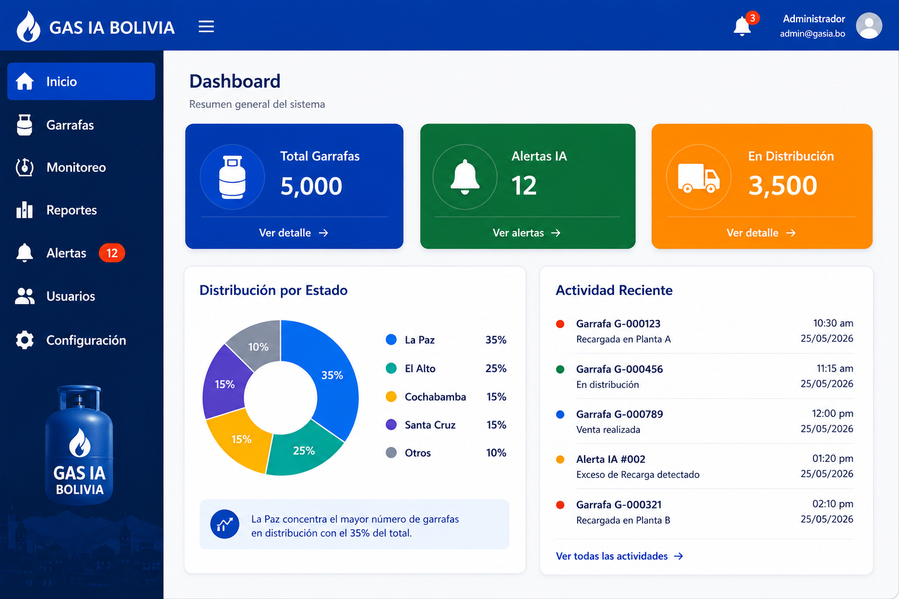
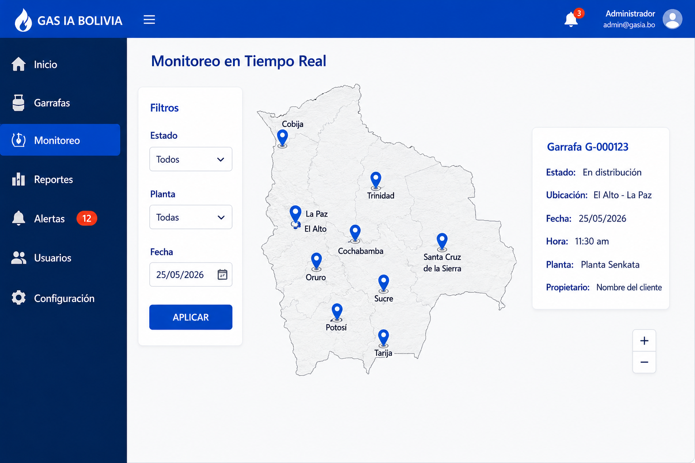
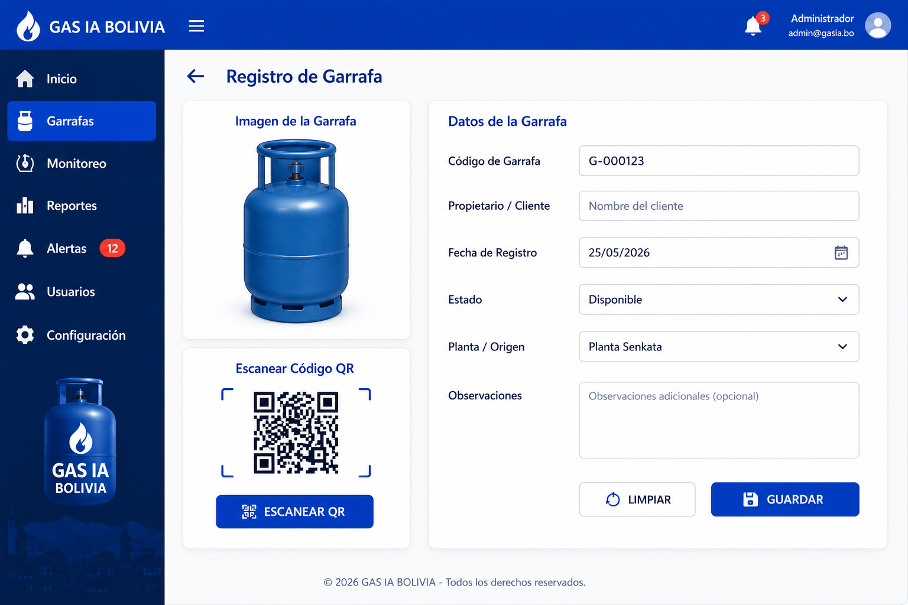
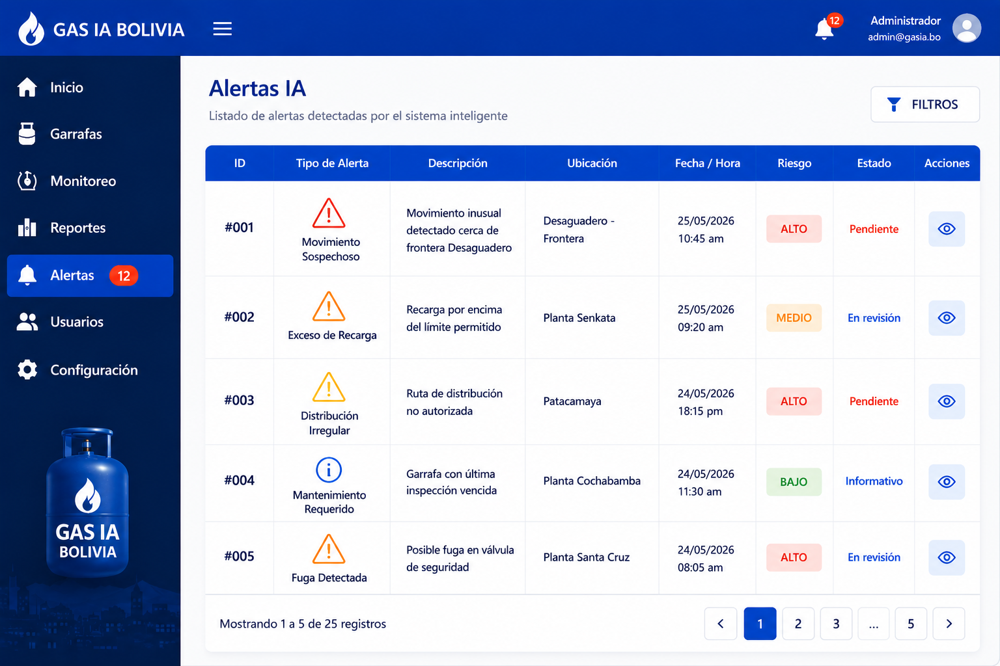

Sistema Inteligente para el Monitoreo y Gestión de Garrafas de GLP en Bolivia
```Gas IA Bolivia es una plataforma web desarrollada para mejorar el control, monitoreo y trazabilidad de garrafas de GLP en Bolivia, permitiendo una gestión eficiente de la información y facilitando el acceso a reportes y registros del sistema.
```El proyecto busca optimizar la administración de garrafas de gas mediante herramientas tecnológicas que permitan registrar, monitorear y consultar información en tiempo real.
Desarrollar un sistema web inteligente para la gestión y monitoreo de garrafas de GLP utilizando tecnologías modernas de desarrollo web.
```Visualización general de indicadores y estadísticas.
Registro, control y administración de garrafas.
Seguimiento y control de información en tiempo real.
Generación de alertas y notificaciones inteligentes.
Generación de reportes en PDF y Excel.




```Yonatan Flores Apaza
```